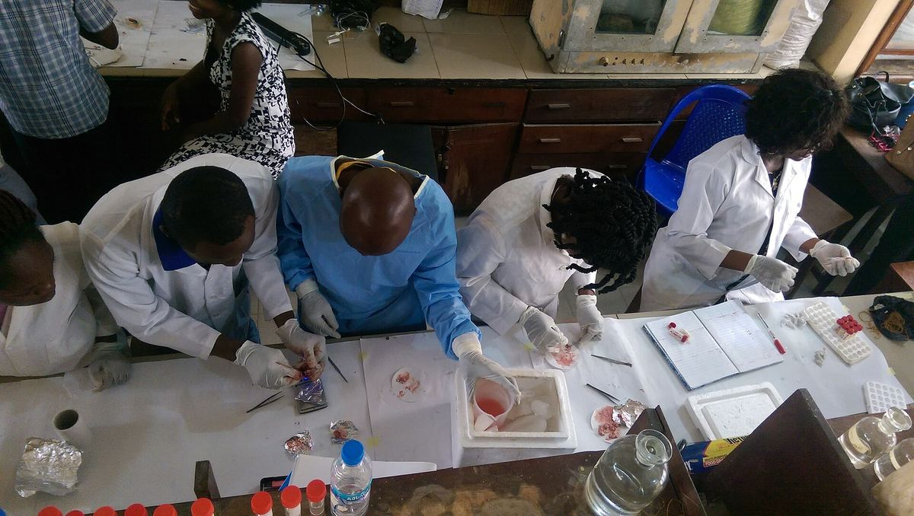
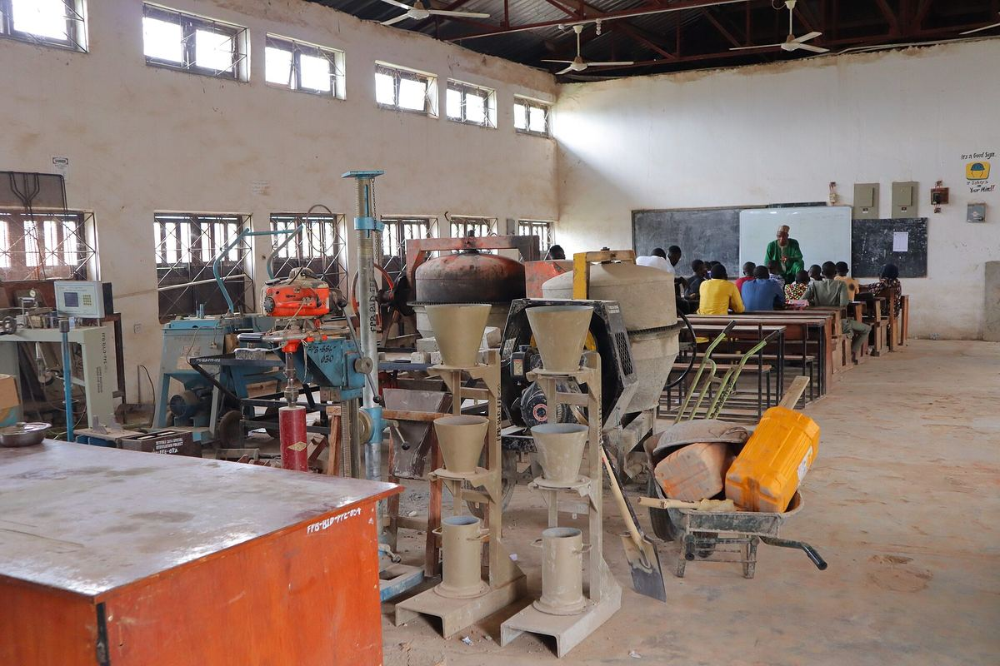
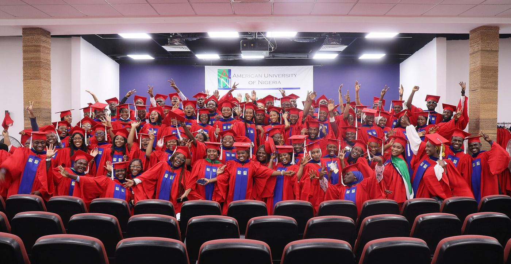
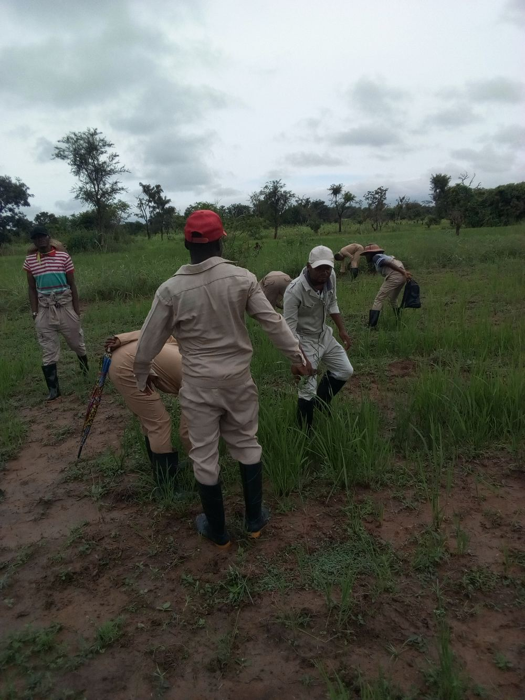

College of Medicine Featured
OKU researchers unveil low-cost malaria diagnostic kit
A College of Medicine team has developed a paper-based rapid test that costs under ₦500 per strip.
Read the full storyStories of discovery, achievement and campus life from across Okunland University.

A College of Medicine team has developed a paper-based rapid test that costs under ₦500 per strip.
Read the full story
The Engineering & Robotics squad beat 38 universities with an autonomous crop-scouting rover.
Read story: Robotics students win national championship
Applications for the new session are open to UTME, Direct Entry and transfer candidates.
Read story: 2026/2027 admissions open: 65+ accredited programmes
Thanks to the expanded solar array, reading rooms now stay open late all semester.
Read story: Library extends opening hours to 11 PM
Field trials on the OKU teaching farm show new varieties thrive with less water.
Read story: Climate-smart rice varieties boost yields by 30%
Eight faculties, one trophy: the 2026 derby league begins at the University Stadium.
Read story: Inter-faculty derby season kicks offGet every new story, event and admissions update delivered free to your inbox every fortnight.
Browse previous editions of The Okunland Gazette. PDF editions are available from the Directorate of Information & Public Relations.
Researchers at the Institute of Tropical Medicine have unveiled a paper-based rapid diagnostic test for malaria that can be produced for less than ₦500 per strip — a fraction of the cost of imported kits.
The test, developed over four years with support from TETFUND’s Institution-Based Research grant, detects malaria parasites from a finger-prick blood sample in under 15 minutes. Field trials are under way at primary health centres in Kogi, Niger and Benue states.
“Our goal is a test that any community health worker can use, anywhere, at a price every family can afford,” said the lead investigator. The team has filed for a patent and is in discussions with Nigerian manufacturers.
A team of five students from the Faculty of Engineering & Robotics has won the national university robotics championship, beating 38 universities with an autonomous rover that scouts crops for pests and disease.
The solar-powered rover, built in the Robotics & Mechatronics Hub, uses on-board computer vision to identify fall armyworm damage and maps affected areas for farmers via SMS.
The team will represent Nigeria at the continental finals in 2027.
Okunland University of Nigeria has opened applications for the 2026/2027 academic session. Post-UTME registration is available on the E-Portal until 30 January 2027.
Candidates who scored 180 and above in the UTME and chose OKU are eligible to register. Departmental cut-offs and full requirements are published on the Admissions page.
The Admissions Office will host a hybrid Post-UTME Information Day on 4 December 2026.
Following the completion of the 1 MW solar micro-grid extension, the university library will now remain open until 11:00 PM on weekdays throughout the semester, with a 24-hour reading room during examinations.
Three drought-tolerant rice varieties tested by the Centre for Climate-Smart Agriculture produced yields up to 30% higher than local varieties under reduced irrigation, according to results presented at the Faculty of Agriculture’s research week.
The 2026 inter-faculty football derby kicked off with a packed University Stadium as defending champions Engineering drew 1–1 with the College of Medicine. Matches continue every Saturday through November.